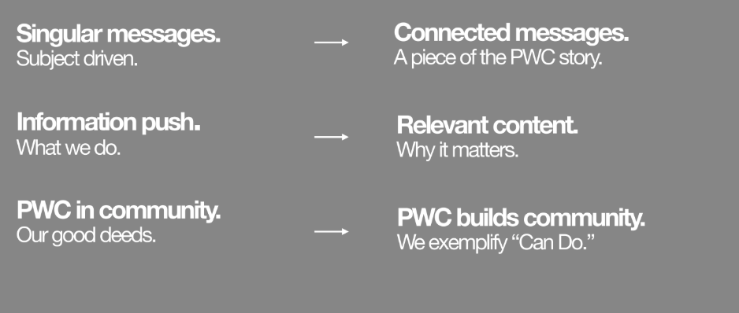
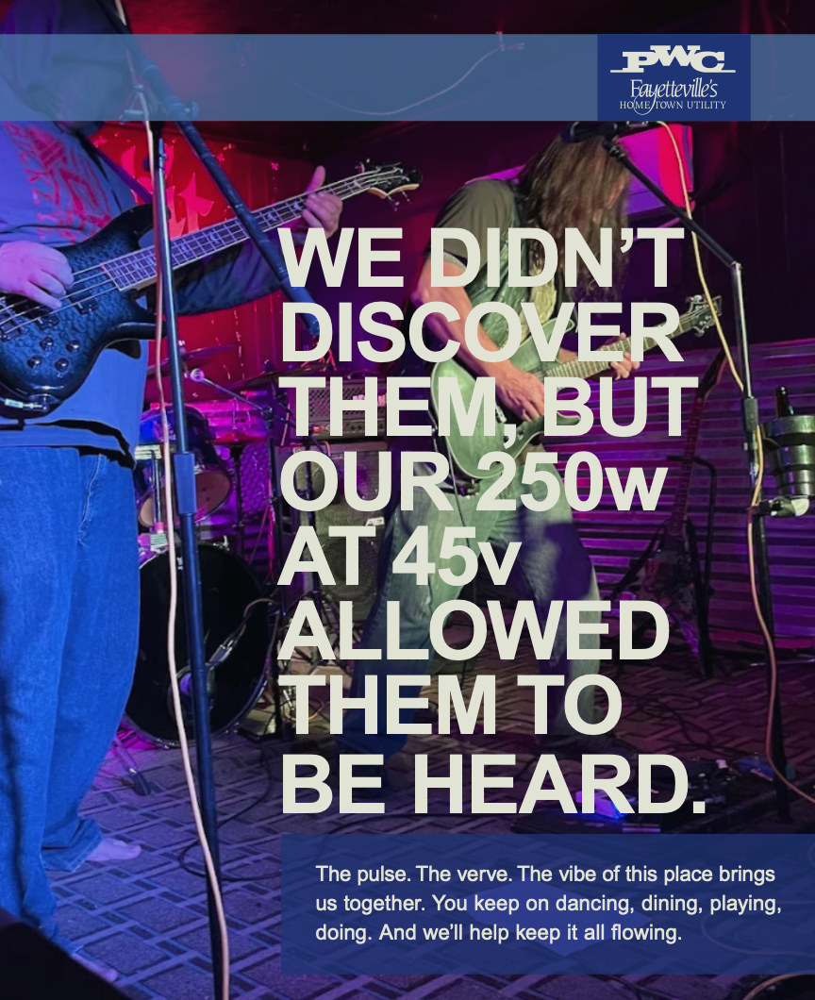
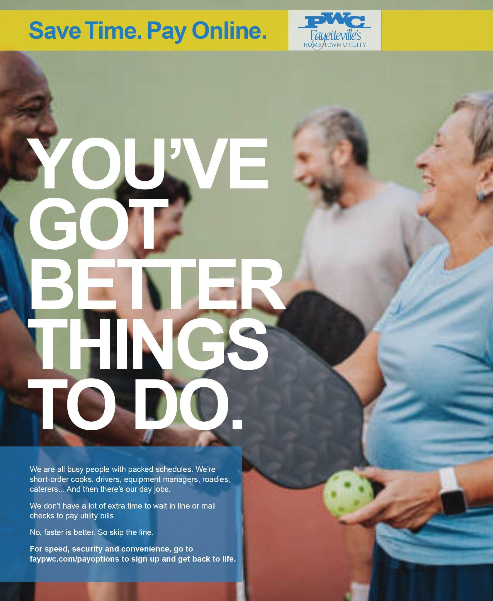

Homemaking the Hometown Utility
Most people view utilities as entities, not brands. They’re invisible services that only earn attention when something goes wrong. A sudden outage or a big bill hike. As North Carolina’s largest municipal electric system, Public Works Commission (PWC), wanted to be visible for all the good they do across the state.

Its hometown, Fayetteville, is an all-American city with a small-town personality. After immersing ourselves in the city, scanning any and all reviews we could get our hands on, and studying how the in-house marketers had carried the messaging before, we discovered the core problem was an outdated communication model. They relied on one-off, subject-driven broadcasts detailing PWC's daily operations rather than their impact. Real brand affinity would only come from shifting the narrative from a transactional push of "what we do" to a value-driven story of "why it matters." They needed a connected framework that proved they not only power the community, they help build it.

